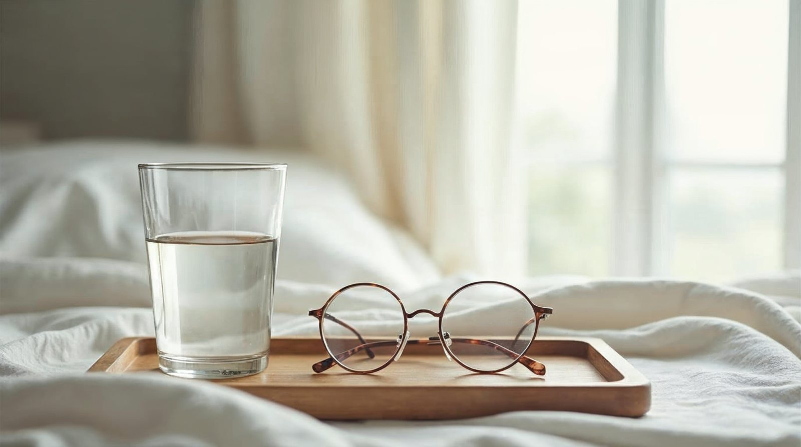
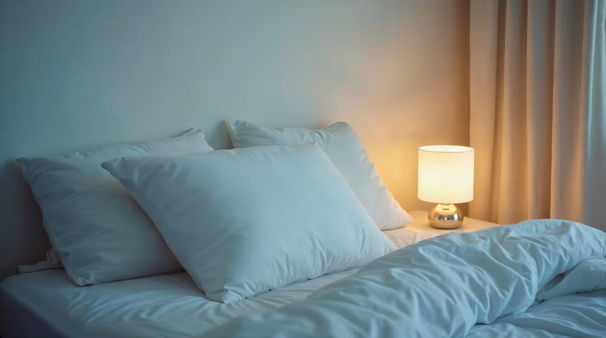
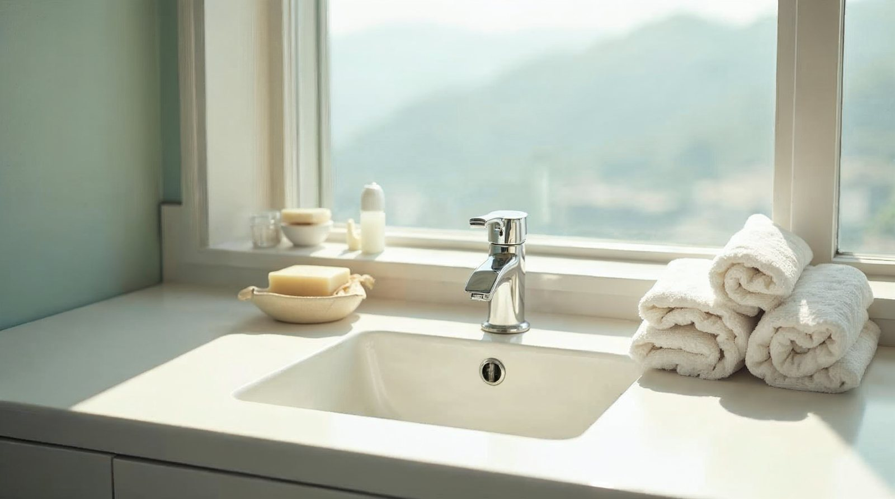
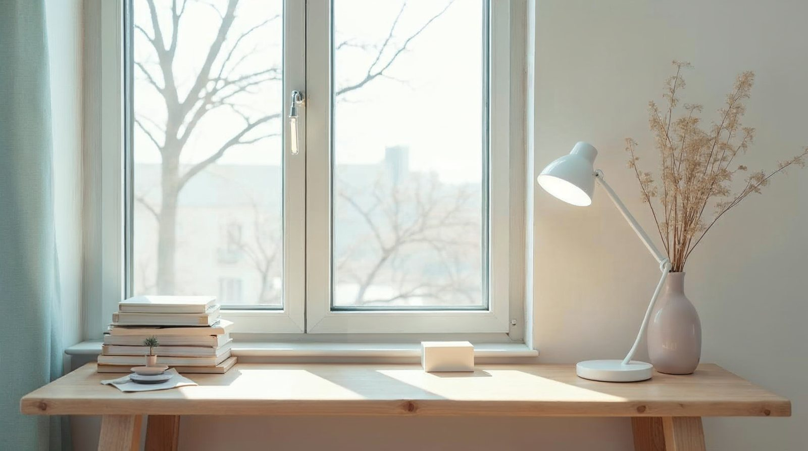
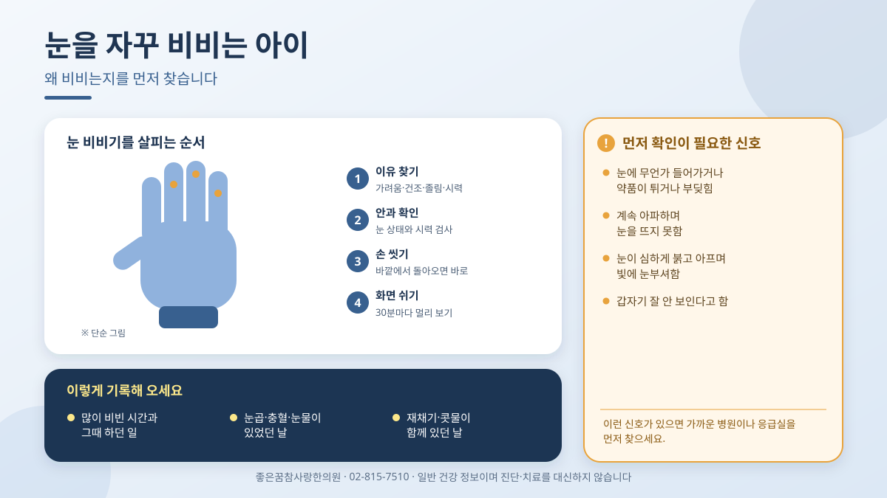

이종호 한의사 감수좋은꿈참사랑한의원 대표원장 (한의사 면허번호 19769)발행 2026-11-26 · 수정 2026-11-27
이 글의 차례
저녁 식탁에서 아이가 숟가락을 내려놓고 두 손등으로 눈을 박박 비빕니다. "그만 비벼, 눈 나빠져." 몇 번을 말해도 잠시 뒤면 또 손이 눈으로 가죠. 눈가는 발갛게 달아올랐고, 아침엔 눈곱이 끼어 있기도 해요. 가려워서 그런 건지, 졸려서 그런 건지, 버릇이 된 건지 알 수가 없으시죠.
눈을 자주 비비는 아이를 데리고 오시는 부모님은 대개 두 가지를 걱정하세요. 하나는 눈에 무슨 병이 있는 건 아닌지, 다른 하나는 이렇게 비비다가 시력이 나빠지거나 눈에 상처가 나지 않을지예요. 말려도 멈추지 않으니 답답하신 것도 당연해요.
그런데 아이가 눈을 비비는 건 원래 그래요. 눈 비비기는 아이 몸이 불편함을 해결하려는 제일 손쉬운 방법이거든요. 눈이 가렵거나, 뻑뻑하거나, 피곤하거나, 뭔가 들어간 느낌이 들 때 아이는 생각하기 전에 손이 먼저 가요.
그러니까 사실은 '비비는 손'과 '비비게 만드는 불편'은 다른 얘기예요. 손만 붙잡으면 불편은 그대로 남아 있으니, 손은 또 눈으로 가는 거죠. 그래서 저는 '비비지 마'라는 말보다 '왜 비비는지'를 먼저 찾는 게 순서라고 생각해요.
저는 눈을 비비는 아이를 볼 때 눈만 보지 않고 코와 피부, 잠, 화면 보는 시간, 마음의 긴장까지 함께 봐요. 눈 비비기가 언제, 어디서, 어떤 모습으로 나타나는지를 따라가다 보면 대개 그 이유가 조금씩 드러나거든요.
왜 아이는 눈을 자꾸 비빌까요
아이가 눈을 비비는 이유는 생각보다 다양합니다. 한 아이에게 두세 가지가 겹쳐 있는 경우도 흔합니다.
- 꽃가루나 먼지, 진드기, 반려동물 털 때문에 눈이 가려운 경우
- 실내가 건조하거나 화면을 오래 봐서 눈이 뻑뻑한 경우
- 졸리거나 피곤할 때 습관처럼 손이 가는 경우
- 아래 속눈썹이 눈을 찌르거나 무언가 들어간 느낌이 있는 경우
- 잘 안 보여서 눈을 찡그리거나 비비는 경우
- 긴장하거나 지루할 때 손이 가는 버릇이 된 경우
가장 흔한 이유는 알레르기입니다. 알레르기 결막염이 있으면 눈이 가렵고 맑은 눈물이 흐르며 흰자위가 발갛게 충혈됩니다. 알레르기 비염과 함께 오는 경우가 많아서, 재채기와 맑은 콧물, 코막힘이 같은 시기에 나타나는지 함께 살펴보시면 실마리가 됩니다.
아기 때부터 아래 속눈썹이 안쪽으로 말려 눈을 찌르는 아이도 있습니다. 이런 경우 눈물이 자주 고이고 한쪽이나 양쪽 눈을 유난히 자주 비빕니다. 크면서 저절로 나아지는 경우가 많지만, 각막에 상처가 생길 수 있어 안과에서 확인을 받으시는 것이 좋습니다.
눈 비비기와 눈 깜빡임 틱은 어떻게 다른가요
눈을 자꾸 깜빡이는 모습 때문에 틱을 걱정하시는 부모님도 많습니다. 눈이 가렵거나 뻑뻑해서 깜빡이는 경우는 눈에 불편함이 있고, 그 불편함이 줄면 깜빡임도 함께 줄어드는 경우가 많습니다. 눈물이나 충혈, 눈곱 같은 모습이 함께 보이기도 합니다.
틱으로 오는 깜빡임은 눈의 불편함 없이도 나타나고, 긴장하거나 피곤할 때 더 심해지며, 아이가 잠시 참을 수 있지만 곧 다시 나타나는 특징이 있습니다. 눈 깜빡임에 이어 코를 킁킁거리거나 어깨를 으쓱하는 모습이 생기기도 합니다.
다만 이 둘은 함께 오기도 합니다. 알레르기로 눈을 자주 깜빡이던 아이가 그 동작이 익숙해지면서 버릇처럼 이어지는 경우도 있습니다. 그래서 안과에서 눈의 문제를 먼저 확인하고, 눈에 큰 문제가 없는데도 깜빡임이 이어진다면 그다음에 틱 쪽을 함께 살펴보는 순서를 권합니다.

눈을 비비면 눈에 어떤 영향이 있나요
가끔 비비는 정도로 눈이 크게 상하지는 않습니다. 하지만 세게, 자주, 오래 비비면 눈 주변 피부가 붓고 거칠어지며 색이 어두워질 수 있습니다. 눈꺼풀 피부는 몸에서 가장 얇은 편이라 자극에 쉽게 반응합니다.
손에 묻은 균이 눈으로 들어가 결막염이나 다래끼가 생기기도 합니다. 바깥 놀이를 하고 돌아와 손을 씻지 않은 채 눈을 비비는 일이 잦다면 특히 그렇습니다. 그리고 눈이 가려울 때 비비면 그 순간은 시원하지만, 비비는 자극이 다시 가려움을 불러 '가려움과 비비기'가 꼬리를 무는 고리가 만들어집니다.
오랜 기간 눈을 세게 비비는 습관이 각막 모양에 영향을 줄 수 있다는 이야기도 있습니다. 그래서 눈 비비기가 몇 달째 이어진다면 안과에서 시력과 각막 상태를 한 번 확인받아 두시면 마음이 놓이실 겁니다.
화면과 눈 비비기는 어떤 관련이 있나요
아이들은 무언가에 집중하면 눈 깜빡이는 횟수가 크게 줄어듭니다. 태블릿이나 휴대폰으로 영상을 보거나 게임을 할 때 특히 그렇습니다. 깜빡임이 줄면 눈 표면이 마르고, 화면을 끈 뒤 눈이 뻑뻑해져 비비게 됩니다.
화면을 볼 때는 30분마다 한 번씩 멀리 창밖을 보거나 눈을 감고 잠시 쉬게 해 주세요. 화면은 눈높이보다 조금 아래에 두고, 방을 너무 어둡게 하지 않는 것도 도움이 됩니다. 잠들기 직전의 화면은 눈의 피로와 함께 잠도 늦추니, 잠자리에는 화면을 두지 않는 쪽을 권합니다.
눈이 잘 안 보여서 비비는 경우도 있나요
있습니다. 아이들은 잘 안 보인다는 것을 말로 설명하지 못하는 경우가 많습니다. 원래 그렇게 보이는 줄 알기 때문입니다. 대신 눈을 찡그리거나, 텔레비전에 바짝 다가가 보거나, 고개를 기울이거나, 눈을 자주 비비는 모습으로 나타납니다.
이런 모습이 보인다면 안과에서 시력 검사를 받아 보세요. 아이의 시력은 크면서 빠르게 변하기 때문에 정기적으로 확인하는 것이 좋습니다. 시력이 원인이라면 안경이나 안과 치료로 해결하는 것이 먼저이고, 한의원에서는 눈의 피로와 잠, 생활 리듬처럼 함께 살필 수 있는 부분을 봅니다.

졸릴 때 비비는 것도 살펴야 하나요
어린아이가 졸릴 때 눈을 비비는 것은 아주 흔한 모습입니다. 이 경우는 오히려 '이제 재울 때'라는 신호로 활용하시면 좋습니다. 눈을 비비기 시작하면 불을 낮추고 잠자리 준비를 시작해 보세요. 놓치고 더 늦게 재우면 오히려 잠투정이 길어지는 경우가 많습니다.
다만 낮에도 자주 졸려 눈을 비비고 하품이 잦다면 밤잠이 충분한지, 코가 막혀 깊게 자지 못하는 것은 아닌지 함께 살펴볼 필요가 있습니다. 밤잠이 흔들리면 낮의 눈 비비기도 늘어나는 경우가 많습니다.
계절에 따라 눈 비비기가 달라지나요
봄에는 꽃가루와 황사, 가을에는 잡초 꽃가루와 큰 일교차 때문에 알레르기가 있는 아이의 눈 비비기가 눈에 띄게 늘어납니다. 꽃가루가 많은 날 바깥 놀이를 하고 돌아온 저녁에 특히 심해지는 모습을 보이기도 합니다.
여름에는 수영장의 소독약이나 땀이 눈에 들어가 따가워 비비는 경우가 많고, 겨울에는 난방으로 실내가 건조해져 눈이 뻑뻑해 비비는 경우가 늘어납니다. 같은 눈 비비기라도 계절에 따라 이유가 다를 수 있다는 것을 알고 계시면 대처하기가 한결 쉬워집니다.
수영장에 다니는 아이라면 물안경을 꼭 맞는 것으로 씌우고, 수영 뒤에는 깨끗한 물로 눈가를 헹궈 주세요. 겨울에는 가습기를 쓰되 너무 습하지 않게 맞추고, 하루 몇 번 짧게 환기해 주시면 좋습니다.
어린이집이나 학교에서는 어떻게 돕나요
집에서는 부모님이 곁에서 살필 수 있지만, 어린이집이나 학교에서는 아이 혼자 불편함을 견뎌야 합니다. 그래서 선생님께 아이가 눈이 가려워 자주 비빈다는 것을 미리 알려 두시면 좋습니다. 바깥 놀이 뒤 손 씻기를 한 번 더 챙겨 주시거나, 눈을 많이 비비는 날을 알려 주시면 기록에도 보탬이 됩니다.
안약을 넣어야 하는 아이라면 기관에서 넣어 줄 수 있는지, 어떻게 맡겨야 하는지를 미리 확인해 두세요. 아이 스스로 손수건을 챙겨 다니며 눈가를 닦도록 연습하는 것도 방법입니다. 스스로 불편함을 다루는 방법을 익히면 손이 눈으로 가는 일도 점차 줄어듭니다.

가족 모두 함께하면 더 쉬워집니다
아이에게만 손 씻기와 화면 줄이기를 요구하면 아이는 혼나는 기분이 들기 쉽습니다. 저녁에 집에 돌아오면 가족 모두 손을 씻고, 저녁 식사 뒤에는 다 함께 화면을 내려놓는 시간을 만들어 보세요. 부모님이 먼저 보여 주시면 아이는 훨씬 쉽게 따라옵니다.
형제자매가 있다면 누가 오늘 눈을 덜 비볐는지 겨루기보다, 함께 지킨 약속에 스티커를 붙이는 식으로 즐겁게 이어 가 보세요. 작은 성공이 쌓이면 아이도 스스로 손을 내려놓는 순간이 늘어납니다.
먼저 이렇게 여쭙니다
처음 오시면 대략 이런 순서로 여쭙니다.
- 눈 비비기는 언제부터 시작됐고, 하루 중 언제 심한가요?
- 눈이 가렵다고 하나요, 뻑뻑하다고 하나요, 아프다고 하나요?
- 눈곱, 충혈, 눈물이 함께 있나요?
- 재채기나 콧물, 피부 가려움이 같은 시기에 있나요?
- 하루에 화면을 보는 시간은 어느 정도인가요?
- 안과에서 진료나 시력 검사를 받은 적이 있나요?
눈 깜빡임이나 다른 반복 동작이 함께 있는지, 최근 긴장할 일이 있었는지도 조심스럽게 여쭙습니다.

일상에서 먼저 해 볼 수 있는 것
눈 비비기를 줄이려면 말로 막기보다 비비고 싶은 이유를 줄이고, 손이 갈 때 대신할 행동을 만들어 주는 쪽이 오래갑니다.
- 바깥에서 돌아오면 손과 얼굴을 씻고, 눈가는 물로 가볍게 헹궈 주기
- 침구를 자주 빨고 햇볕에 말리며, 아이 방 먼지를 자주 닦기
- 꽃가루가 많은 날에는 창문을 오래 열어 두지 않기
- 화면은 30분마다 쉬게 하고, 잠자리에는 화면 두지 않기
- 눈이 가려울 때 비비는 대신 깨끗하고 차가운 물수건을 잠시 대 주기
- 손톱을 짧게 깎아 비빌 때 상처가 덜 나게 하기
아이가 비비는 모습을 볼 때마다 혼내면 아이는 숨어서 비비게 됩니다. 대신 "눈이 불편하구나, 물수건 줄까?" 하고 불편함을 먼저 알아봐 주세요. 비비지 않고 잘 참은 순간을 찾아 칭찬해 주시는 것도 좋습니다.
한의원에서 함께 살필 수 있는 경우
- 알레르기 결막염과 비염이 함께 있어 눈과 코가 자주 불편한 경우
- 눈이 쉽게 피로하고 뻑뻑하며 오후에 눈 비비기가 느는 경우
- 잠이 얕고 낮에 자주 졸려 눈을 비비는 경우
- 눈 주변 피부가 건조하고 자주 가려워 긁는 경우
- 긴장하면 눈 비비기나 깜빡임이 늘어나는 경우
좋은꿈참사랑한의원에서는 모든 분의 맥을 먼저 짚고, 눈 주변과 코, 혀를 살피며 잠과 화면 시간, 피부 상태를 여쭙습니다. 진찰한 내용을 바탕으로 생활에서 바꿔 볼 것 하나와 함께 아이 몸에 맞는 관리를 상의합니다.
한약을 상의할 때는 아이가 쓰고 있는 안약과 먹는 약을 모두 확인하고 신중하게 정합니다. 침을 무서워하는 아이에게 억지로 하지 않고, 눈 주변과 손을 부드럽게 눌러 주는 방법처럼 집에서도 따라 할 수 있는 방법을 함께 알려 드립니다. 눈 자체의 진료는 안과와 나란히 가시면 됩니다.
이렇게 기록해 오시면 상담이 쉬워집니다
눈 비비기는 언제, 어디서 늘어나는지를 알면 이유가 훨씬 잘 보입니다. 1~2주만 간단히 적어 보세요.
- 눈을 많이 비빈 시간대와 그때 하고 있던 일
- 가렵다, 뻑뻑하다, 졸리다처럼 아이가 말한 불편
- 눈곱, 충혈, 눈물이 있었던 날
- 재채기와 콧물, 피부 가려움이 함께 있었던 날
- 하루 화면 시간과 잠든 시각
바깥 놀이를 한 날, 화면을 오래 본 날, 잠을 늦게 잔 날처럼 비비기가 늘어나는 날의 공통점이 보이면 무엇부터 바꿀지가 분명해집니다.
비비는 손보다 불편한 눈을 먼저
눈을 비비는 아이의 손은 대개 '불편해요'라는 말을 대신하고 있어요. 그 불편함을 찾아 줄여 주면 손도 자연스럽게 눈에서 멀어지는 경우가 많거든요. 손을 붙잡고 혼내기 전에, 지금 어디가 불편한지 한 번 물어봐 주세요.
불편한 눈을 살피는 건 제가 맡을게요. 대신 하나만 부탁드려요. 바깥에서 돌아오면 손과 얼굴부터 씻겨 주세요. 딴 건 하시던 대로 편하게 하셔도 돼요. 비비는 걸 단번에 막을 순 없어도, 비비는 손이 깨끗하면 눈이 덜 고생하거든요.
다음에 오시면 눈 비비기 기록을 함께 펼쳐 놓고, 아이의 눈이 언제 가장 불편한지부터 여쭐게요. 물어보실 게 생기면 그때그때 편하게 말씀해 주세요.
이런 증상은 먼저 확인이 필요합니다
- 눈에 무언가 들어가거나 세제 같은 약품이 튀었거나, 부딪힌 뒤 계속 아파하며 눈을 뜨지 못하는 경우
- 눈이 심하게 붉고 아프며 빛을 보면 눈부셔하고, 갑자기 잘 안 보인다고 하는 경우
이런 신호가 있으면 한의원보다 가까운 병원이나 응급실을 먼저 찾으세요.
함께 읽으면 좋은 글
- 눈이 가렵고 충혈되며 맑은 눈물이 흐르는 알레르기 결막염은 어떻게 살피나요?
- 아이가 아침마다 재채기와 맑은 콧물, 코막힘을 달고 사는 알레르기 비염은 어떻게 살피나요?
- 아이가 눈을 자꾸 깜빡이거나 킁킁거리는 틱이 보일 때 부모는 무엇을 살피나요?
- 눈꺼풀에 다래끼가 자꾸 반복해서 날 때는 무엇을 살피고 어떻게 관리하나요?
- 아이가 휴대폰을 보다가 밤늦게 잠들 때는 어떻게 바꿔 갈 수 있을까요?

여쭙는 것
- 눈 비비기는 언제부터 시작됐고, 하루 중 언제 심한가요?
- 눈이 가렵다고 하나요, 뻑뻑하다고 하나요, 아프다고 하나요?
- 눈곱, 충혈, 눈물이 함께 있나요?
생활에서 해 볼 것
- 바깥에서 돌아오면 손과 얼굴을 씻고, 눈가는 물로 가볍게 헹궈 주기
- 침구를 자주 빨고 햇볕에 말리며, 아이 방 먼지를 자주 닦기
- 꽃가루가 많은 날에는 창문을 오래 열어 두지 않기
한의원에서 함께 살필 것
- 알레르기 결막염과 비염이 함께 있어 눈과 코가 자주 불편한 경우
- 눈이 쉽게 피로하고 뻑뻑하며 오후에 눈 비비기가 느는 경우
- 잠이 얕고 낮에 자주 졸려 눈을 비비는 경우
먼저 확인이 필요한 신호
- 눈에 무언가 들어가거나 세제 같은 약품이 튀었거나, 부딪힌 뒤 계속 아파하며 눈을…
- 눈이 심하게 붉고 아프며 빛을 보면 눈부셔하고, 갑자기 잘 안 보인다고 하는 경우
한눈에 보는 표
| 구분 | 핵심 |
|---|---|
| 여쭙는 것 | 눈 비비기는 언제부터 시작됐고, 하루 중 언제 심한가요? 눈이 가렵다고 하나요, 뻑뻑하다고 하나요, 아프다고 하나요? |
| 생활에서 해 볼 것 | 바깥에서 돌아오면 손과 얼굴을 씻고, 눈가는 물로 가볍게 헹궈 주기 침구를 자주 빨고 햇볕에 말리며, 아이 방 먼지를 자주 닦기 |
| 한의원에서 함께 살필 것 | 알레르기 결막염과 비염이 함께 있어 눈과 코가 자주 불편한 경우 눈이 쉽게 피로하고 뻑뻑하며 오후에 눈 비비기가 느는 경우 |
| 먼저 확인이 필요한 신호 | 눈에 무언가 들어가거나 세제 같은 약품이 튀었거나, 부딪힌 뒤 계속 아파하며 눈을 뜨지 못하는 경우 눈이 심하게 붉고 아프며 빛을 보면 눈부셔하고, 갑자기 잘 안 보인다고 하는 경우 |
자주 묻는 질문
눈을 자주 비비면 시력이 나빠지나요?
가끔 비비는 정도로 시력이 크게 달라지지는 않습니다. 다만 몇 달째 세게 자주 비빈다면 안과에서 시력과 각막 상태를 한 번 확인받아 두시길 권합니다.
눈 비비기와 틱은 어떻게 구분하나요?
눈이 가렵거나 뻑뻑해서 비비는 경우는 불편함이 줄면 함께 줄어드는 경우가 많습니다. 눈에 불편함이 없는데도 깜빡임이 반복된다면 틱 쪽도 함께 살펴봅니다.
인공눈물을 아이에게 넣어 줘도 되나요?
안과나 약국에서 아이에게 맞는 제품과 횟수를 안내받아 쓰시길 권합니다. 이미 쓰고 계시다면 진료 때 알려 주세요.
안약을 쓰고 있는데 한의원 진료를 함께 받아도 되나요?
처방받은 안약은 그대로 쓰시면서 함께 상의하실 수 있습니다. 쓰고 계신 안약과 먹는 약을 알려 주시면 확인하고 신중하게 정합니다.
눈을 비빌 때마다 손을 잡아 말려야 하나요?
매번 말리면 아이가 숨어서 비비기 쉽습니다. 불편함을 먼저 알아봐 주고 차가운 물수건처럼 대신할 방법을 건네 주시길 권합니다.
좋은꿈참사랑한의원은 재진 때 지난번 이야기부터 이어서 여쭙니다. 진료시간과 예약은 오시는 길에서 확인하세요.
어디서 상담받을 수 있나요?
좋은꿈참사랑한의원은 서울 동작구 만양로2길 2 신성빌딩 3층·5층(서울 동작구 상도동, 7호선 상도역 3번 출구 근처)에 있습니다. 한의사 3명(이종호 대표원장, 조영기 수석진료원장, 정원영 진료원장)이 진료합니다. 진료시간은 평일 09:30~20:00(점심 13:00~14:00), 토·일·공휴일 09:30~15:00이며, 방문 전 전화로 확인을 권합니다. 예약은 네이버 예약, 카카오톡 상담, 전화 02-815-7510로 받습니다.
이 글은 일반적인 건강 정보이며 개인의 진단이나 치료를 대신하지 않습니다. 증상이 있거나 복용 중인 약이 있다면 진료를 통해 확인하세요. 치료 효과는 개인마다 다를 수 있습니다.
작성 기준: 일반적으로 알려져 있는 건강 정보를 참고해 정리했습니다(대표원장 감수). 증상 기록은 1~2주 동안 하루 1회, 비슷한 시간에 적어 오시면 지난 상태와 비교하기 쉽습니다.